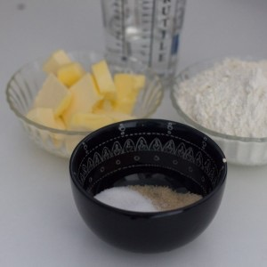
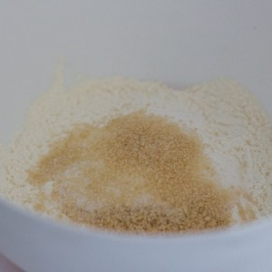
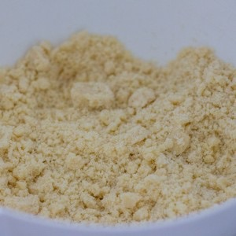
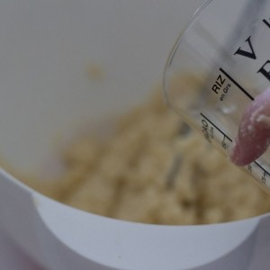
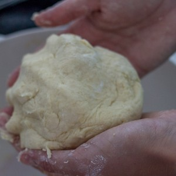
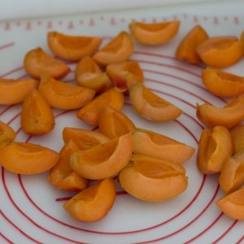
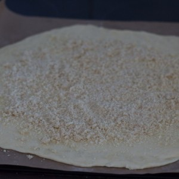
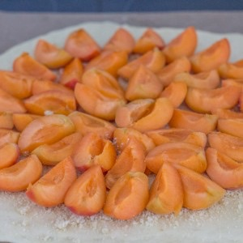
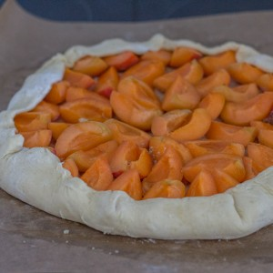

Tarte rustique abricots et amandes

Aujourd’hui c’est officiel ça y est nous sommes enfin en été (ma saison préférée youhou)!! Je n’avais pas prévu de poster cette recette si vite mais finalement elle représente très bien cette nouvelle saison alors c’est parti pour la recette de la tarte rustique abricots et amandes!
Je crois bien que c’est la toute première tarte rustique que je poste sur le blog est pourtant c’est vraiment notre « présentation » de tarte préférée à mon chéri et à moi. Je ne sais pas comment expliquer mais je trouve que ces tartes ont un petit quelque chose en plus, elles ont un côté vintage que j’aime tout particulièrement et les autres à côté font beaucoup trop classiques. Pour cette fois-ci j’ai fait une tarte rustique abricots et amandes car certes on est en été mais aussi et surtout parce que les abricots, les brugnons, les pêches, et tous les autres fruits d’été sont clairement mes préférés! A chaque fois que je vois ces fruits sur n’importe quels étals de n’importe quel primeur ou de supermarché je rentre les bras chargés de fruits. Dernièrement il me restait pas mal d’abricots et ça tombait bien car j’avais très envie d’une tarte et nous en avons fait profiter une partie de la famille (avec une crème anglaise maison faite par ma belle-mère c’était délicieux!!) Dans cette recette, je réalise une pâte brisée maison et vous pouvez y allez les yeux fermés cette recette est juste parfaite et la pâte est bien tendre après cuisson. L’amande est présente pour réduire l’acidité qu’ont les abricots une fois cuits pour un accord parfait. J’avais saupoudré la moitié de la tarte avec de la cannelle et d’après mon chéri c’est vraiment top (je n’ai pas eu le temps d’avoir un morceau de cette partie-là) alors si vous aussi vous aimez la cannelle n’hésitez pas à en ajouter. Je vous laisse maintenant avec la recette de la tarte rustique abricots et amandes en espérant qu’elle vous plaira et n’hésitez pas à me donner vos avis si jamais vous la tentez 😉
Ingrédients
- Eau froide - 120ml
- Farine - 250g
- Beurre coupé en morceaux - 125g
- Sucre - 20g
- Cassonade - 20g
- Abricots - 10 abricots (environ ça peut varier selon la taille)
- Amande en poudre - 50g
- Cassonnade - 50g
- Citron - 1 filet de citron (1càs)
- Cassonade - 1 càs
- Beurre - 5 g
- Amandes effilées - 1 bonne poignée
- Cannelle (facultatif)
Instructions
- Dans un saladier, mélanger la farine et les deux sucres Vous pouvez choisir de ne mettre que de la cassonade ou que du sucre blanc
- Ajouter le beurre coupé en morceaux
- Bien l'incorporer bien au mélange farine-sucre
- Verser l'eau petit à petit Attention la quantité d'eau peut varier selon les ingrédients utilisés etc alors verser bien petit à petit. Il faut une pâte non collante et homogène
- Si la pâte est trop collante rajouter un peu de farine
- Filmer la pâte et la placer au frais pendant 1 heure (ou plus si vous pouvez)
- Au bout d'une heure abaissez la pâte de manière à ce qu'elle fasse environ 30cm (sur du papier sulfurisé ou dans un moule à tarte) Farinez régulièrement sous la pâte pour qu'elle ne colle pas
- Replacez-la au frais le temps de la préparation des autres ingrédients
- Préchauffer le four à 180°
- Couper les abricots en quatre
- Mélanger dans un saladier la poudre d'amandes, la cassonade puis le citron
- Sortez la pâte à tarte du frigo
- Étalez le mélange poudre d'amandes/cassonade/citron sur la pâte en laissant environ 3cm sur les bords
- Placez vos abricots sur le mélange
- Ramenez les bords de la pâte sur les abricots
- Saupoudrez la tarte de cassonade, d'amandes effilées et déposer des petits morceaux de beurre par ci par la et vous pouvez également saupoudrer de cannelle
- Enfournez à 180° pendant 40-45 minutes ( /!\ surveillez bien la cuisson car le temps de cuisson varie selon les fours!!) La pâte doit être bien dorée
- Déguster tiède ou froide, tel quel ou avec un peu de crème anglaise ou encore une boule de glace vanille c'est délicieux!!









Les tips de la communauté
Grand succès. La présentation rustique plait énormément et la combinaison abricot-amandes est très appréciée. Plusieurs personnes ont testé avec des variantes de fruits et des substituts (avoine, noisettes) avec succès.
Astuces
- La pâte brisée faite maison est excellente et ne détrampe pas
- Ajouter de la cannelle aux abricots pour plus de saveur
- La pâte maison garantit meilleur goût qu'une pâte toute faite
- Faire cuire les abricots avec du sucre complet pour plus de saveur
- Glaçage avec amandes effilées - attention à la cuisson pour ne pas brûler
Variantes suggérées
- Remplacer l'amande par de la poudre de noisettes ou de pistache
- Utiliser d'autres fruits (pêches blanches, pêches-abricots mélangés)
- Ajouter une frangipane en dessous des fruits
- Accompagner d'une boule de glace vanille
- Remplacer les fruits par une confiture (abricot-cannelle)
Ajustements signalés
- Quantité d'eau varie selon la qualité des ingrédients - l'ajouter progressivement